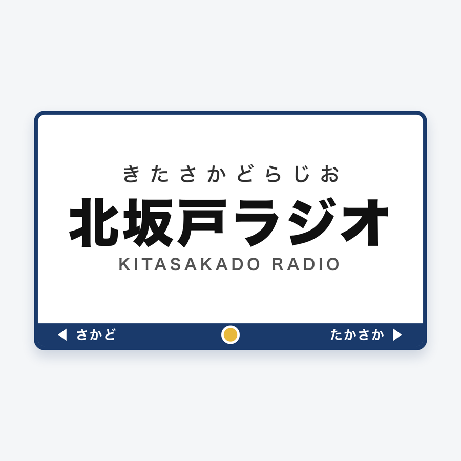
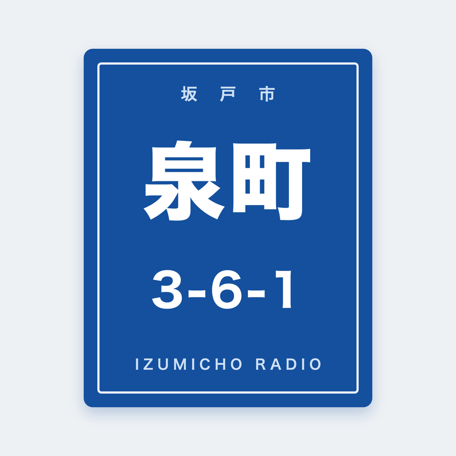
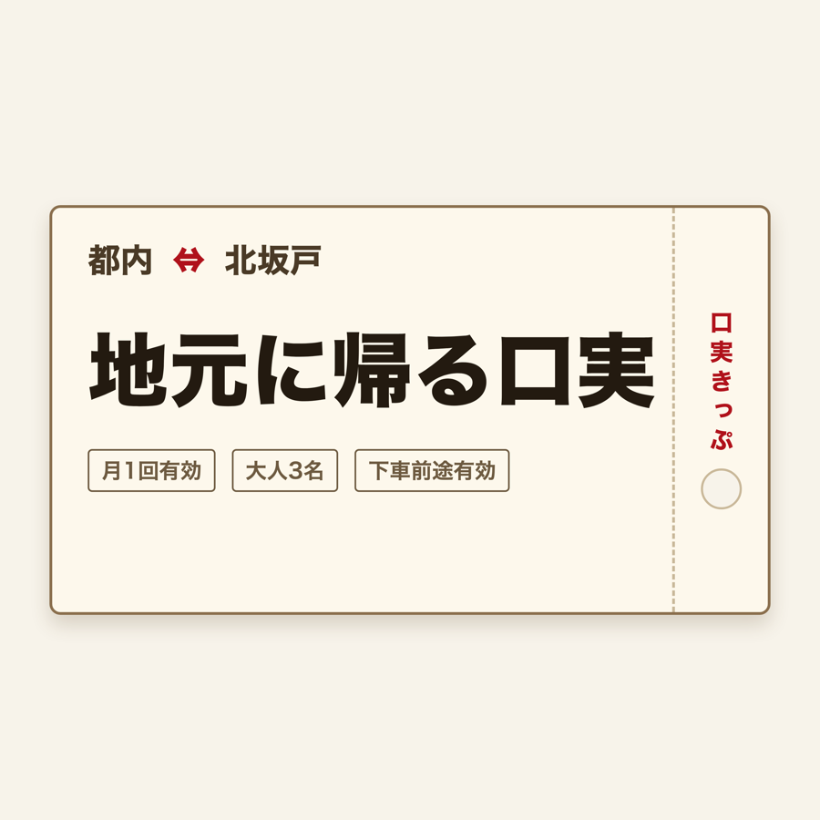
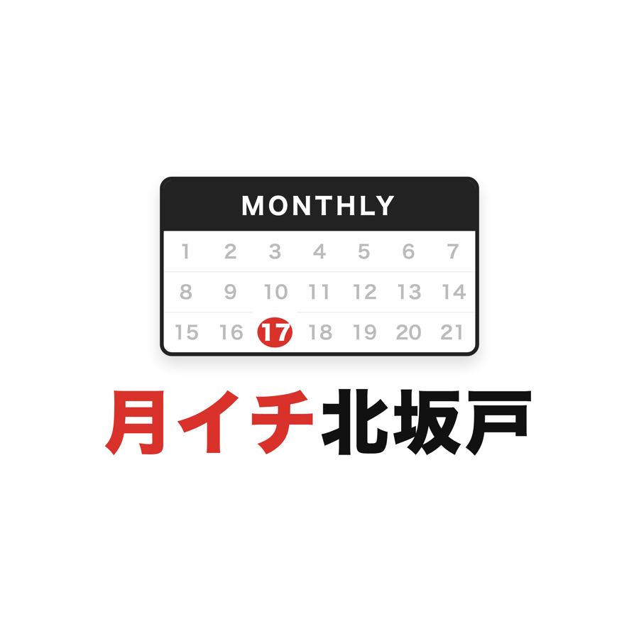
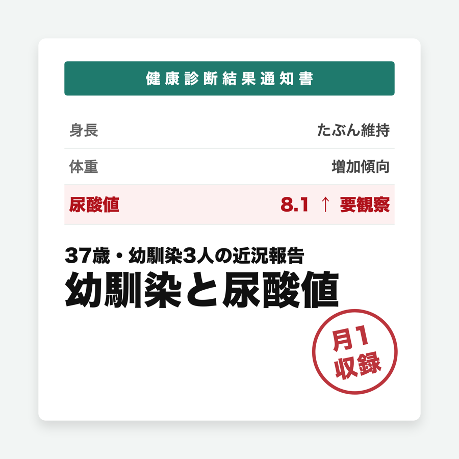

2026-08-18 バーミヤン北坂戸で収録した第0回。まず聴いて、下の5案から番組名を選んでください。
※このページはURLを知っている3人だけの共有用です。拡散はしないでください。
ロゴはそのままSpotifyのカバー画像に使える本番品質で作ってあります。

ど直球の地名タイトル。ロゴは東上線の駅名標。隣駅は実在の「さかど」「たかさか」。

収録したバーミヤンの住所がそのまま番組名。ロゴは電柱の住居表示プレート。収録場所が変わったら回のタイトルを住所にできる遊びも可能。

収録中の本音「これを口実にすれば帰ってこれる」から。ロゴは都内⇔北坂戸の「口実きっぷ」。月1回有効・大人3名。

月1収録の宣言タイトル。カレンダーに赤丸ひとつ。サボると聴いてる人にバレる仕組み。

初回の代表トークから。37歳の現在地を一言で表す攻めた案。ロゴは健康診断結果通知書＋「月1収録」の赤ハンコ。世界に同名番組ゼロ確認済み。